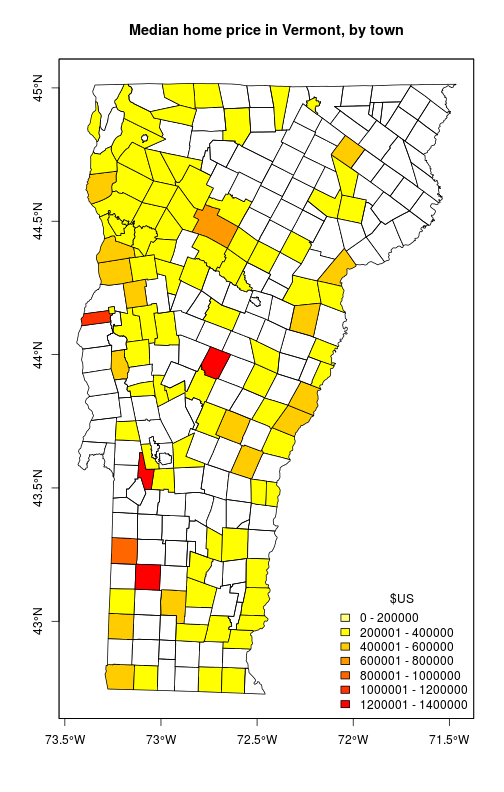
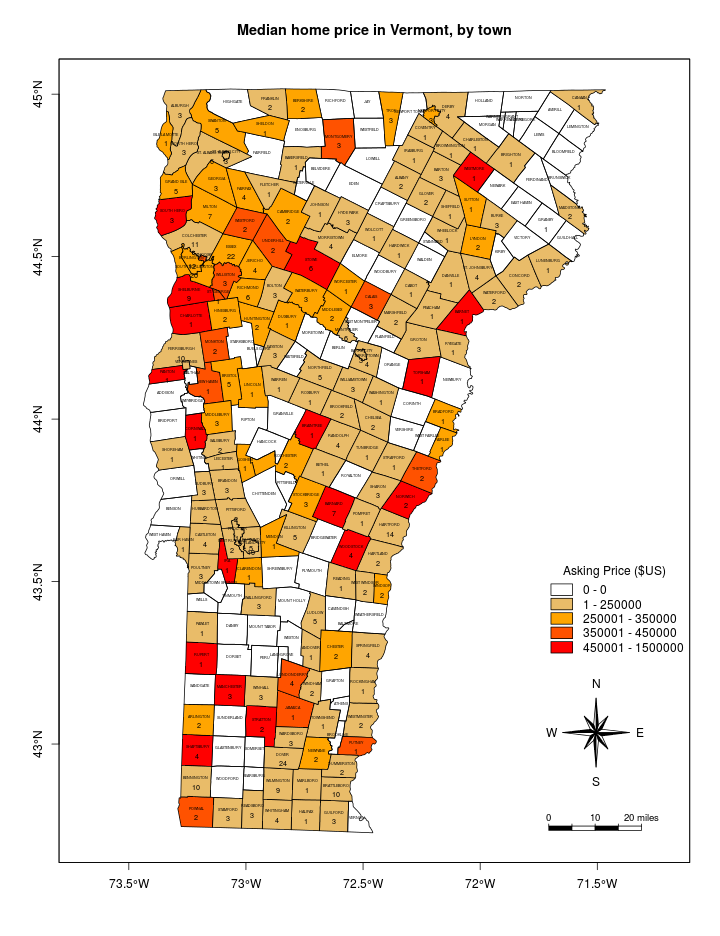

Mapping with R’s base graphics
There must be a half-dozen ways to make maps in R. Let’s not conflate spatial analysis with making maps; there is typically only one - maybe two - ways to do any given spatial analysis. Reading and writing vector files: use package rgdal. Spatial analysis with vector files: use packages sp and rgeos. Use package raster (and occasionally gstat) to work with rasters.
When it comes to plotting the output, you can take your pick of methods. If you are reading this post, you’ve probably already seen a few other more popular posts. I’ll single out this one because I refer to it regularly, plus it links to many other excellent pages:
https://pakillo.github.io/R-GIS-tutorial/
Here are my feelings towards what I believe are the two most popular mapping methods.
- sp::spplot
- Pros: Offers fine control for overlays for a professionally finished look.
- Cons: Uses lattice, which is an implementation of Trellis graphics for R. This is which basically a whole different plotting language–users familar with R base graphics will need to read many help files and do a lot of web searching to figure this out the first time. Complexity of the code increase dramatically with each new feature plotted including text overlays, scale bars, north arrows–and we haven’t even added additional overlays. Each feature is a list of lists, possibly nested even deeper.
- ggplot2
- Pros: Offers fine control for overlays for a professionally finished look. Map has the smooth appearance of a ggplot.
- Cons: ggplot is the grammar of graphics, which is also a whole different plotting language. I’m not a ggplot user, although I agree the plots look fantastic.
The handicap that both of these share is that neither plays well with R’s base graphics. I might be in the minority on this one, but I happen to really like the austerity of plots produced by the base graphics. The trend-following part of me wants to learn ggplot because the plots are slick and colorful, but the swim-against-the-current part of me prefers a good old-fashioned black-and-white line graph.
For mapping I am usually in a small hurry, so oftentimes I prefer to use the base graphics because they are so easy–read in a layer, then send the plot command, and be done.
Let’s run through a quick example.
Getting help with plot methods
First off, finding help for S4 methods takes a little getting used to. What I need to re-learn every month or so is that the methods package extends functionality of the '?' function, so as you might get help for an S3 plot method with ?plot or ?plot.data.frame, you get help for an S4 method with something like method?plot('SpatialPoints'). A little more cumbersome, but a must know to get anything done with an S4 package.
Quick choropleth mapping with base graphics
The general outline of tasks is: 1. Get the homes for sale data. 2. Aggregate the data by town. 3. Plot the aggregated data. 4. See what can be done to make ourselves more proud of the plot.
1. Get the data
To keep this simple I’ll just read in some data rather than finding it right now. Our sample data today will be the subject of a future post: homes for sale in Vermont, scraped from Zillow’s website. I’ll read in a snapshot of homes for sale on May 1, 2016.
zdata <- read.csv('data/FS_2016May01.csv')
# Get a random preview of the table
zdata[sample(1:nrow(zdata), 20),]
## z_id address lat
## 67 zpid_2098794934 92-E-Allen-St-Winooski-VT-05404 44.49134
## 453 zpid_81625101 190-Sand-Rd-Ferrisburgh-VT-05456 44.16929
## 47 zpid_92045327 575-Bullock-Dr-Guilford-VT-05301 42.79941
## 485 zpid_2098847498 0-Monument-Hill-Rd-Springfield-VT-05156 43.30723
## 93 zpid_2105461303 N-Ryder-Pond-Rd-LOT-42-Whitingham-VT-05361 42.81792
## 497 zpid_75479548 204-Kelly-Rd-Dummerston-VT-05301 42.90271
## 425 zpid_124480531 283-Hardscrabble-Rd-Bristol-VT-05443 44.15731
## 321 zpid_92290806 30-Logwood-Cir-Essex-Junction-VT-05452 44.48313
## 217 zpid_75449802 69-East-St-Orleans-VT-05860 44.81125
## 337 zpid_2098828263 326-White-Brook-Rd-Sharon-VT-05065 43.79096
## 445 zpid_2131335491 0-Blockhouse-Point-Rd-North-Hero-VT-05474 44.84657
## 227 zpid_2099879528 127-Fannie-Hill-Rd-Wilmington-VT-05363 42.92525
## 455 zpid_81602541 809-Pierce-Hill-Rd-Sutton-VT-05867 44.67259
## 29 zpid_2114056422 Rr-9-Marlboro-VT-05344 42.83715
## 322 zpid_92025557 1383-Clarendon-Ave-West-Rutland-VT-05777 43.57468
## 14 zpid_75470803 265-Wildflower-Ln-Waterbury-Center-VT-05677 44.39692
## 392 zpid_2126158245 918-Lovers-Ln-Chester-VT-05143 43.28086
## 410 zpid_92018773 60-Campbell-Rd-Rutland-VT-05701 43.58870
## 373 zpid_92247986 125-Chapin-Rd-Essex-Junction-VT-05452 44.53359
## 476 zpid_2105558409 145-Sherwood-Cir-Brattleboro-VT-05301 42.86230
## long price beds baths sqft acres yr_built
## 67 -73.18277 670000 6.0 6 3800 1.523877e+09 1895
## 453 -73.27385 229000 0.5 NA 1721 2.300000e+00 1914
## 47 -72.61330 279000 2.0 1 967 1.060000e+01 2003
## 485 -72.47630 69900 NA NA NA 1.030000e+01 NA
## 93 -72.84584 25000 NA NA NA 2.630000e+00 NA
## 497 -72.65325 347500 3.0 3 2760 1.030000e+01 1970
## 425 -73.10438 287400 3.0 3 1664 2.150000e+00 2011
## 321 -73.05179 345000 3.0 3 2534 7.400000e-01 1985
## 217 -72.19647 224900 3.0 1 1700 NA NA
## 337 -72.47788 229000 3.0 2 1656 NA 1982
## 445 -73.26604 100000 NA NA NA 3.820000e+01 NA
## 227 -72.89042 750000 4.0 3 2400 NA NA
## 455 -72.01751 349500 4.0 2 2700 2.800000e+01 2005
## 29 -72.73828 50000 NA NA NA 1.650000e+01 NA
## 322 -73.03454 289900 4.0 3 2800 2.670000e+01 1992
## 14 -72.71788 490000 3.0 2 2995 NA NA
## 392 -72.61479 500000 5.0 3 2710 7.700000e+01 1791
## 410 -72.99327 224900 3.0 3 2400 4.900000e-01 1991
## 373 -73.05778 395000 4.0 3 2300 3.900000e+00 2000
## 476 -72.62060 184000 3.0 2 1120 7.371903e+09 1997
Data scraped from a web page is bound to be missing a fair number of values, and that seems to be true here. As far as I can tell the lat and long fields are intact though.
I’m going to limit this post to vector data so I can keep the packages to a minimum. Now I can convert our zillow data to a Spatial object and read in a shapefile with Vermont town boundaries:
library(rgdal)
library(sp)
library(raster) # for its summary print method
# Convert zillow data to a SpatialPointsDataFrame using the International Association
# of Oil & Gas Producers EPSG code for WGS84 projection:
z.spat <- SpatialPointsDataFrame(zdata[,c('long', 'lat')], data=zdata, proj4string=CRS("+init=epsg:4326"))
# Read in town boundaries
vt.twn <- readOGR(dsn='data/Boundary_TWNBNDS', layer='Boundary_TWNBNDS_poly')
## OGR data source with driver: ESRI Shapefile
## Source: "data/Boundary_TWNBNDS", layer: "Boundary_TWNBNDS_poly"
## with 255 features
## It has 5 fields
vt.twn
## class : SpatialPolygonsDataFrame
## features : 255
## extent : 424788.8, 581562, 25211.84, 279799 (xmin, xmax, ymin, ymax)
## coord. ref. : +proj=tmerc +lat_0=42.5 +lon_0=-72.5 +k=0.9999642857142857 +x_0=500000 +y_0=0 +datum=NAD83 +units=m +no_defs +ellps=GRS80 +towgs84=0,0,0
## variables : 5
## names : FIPS6, TOWNNAME, CNTY, SHAPE_area, SHAPE_len
## min values : 1005, ADDISON, 1, 100122404, 10203.963
## max values : 9095, WORCESTER, 9, 99942616, 9386.921
# transform town boundary projection to match the points
vt.twn <- spTransform(vt.twn, CRSobj=proj4string(z.spat))
To see how quickly the base graphics get us up and running with a visual, lets plot the points.
plot(vt.twn)
plot(z.spat, add=TRUE, pch=19)

For a quick comparison, here’s what the map looks like on it’s home site:

2. Aggregate the data by town.
Now that everything appears to be in order, I’d like to shade the map according to one or more of the attributes in the data. I’ll begin with home median home price by town.
# sp has a great spatial aggregation tool, no need to actually do any overlay
price <- aggregate(z.spat['price'], by=vt.twn['TOWNNAME'], FUN=median, na.rm=TRUE)
price
## class : SpatialPolygonsDataFrame
## features : 255
## extent : -73.4379, -71.46528, 42.72696, 45.01666 (xmin, xmax, ymin, ymax)
## coord. ref. : +init=epsg:4326 +proj=longlat +datum=WGS84 +no_defs +ellps=WGS84 +towgs84=0,0,0
## variables : 1
## names : price
## min values : 50000
## max values : 1395000
# see what values price has
hist(price$price, main='Median home price by Vermont town', xlab='Price in US Dollars')
 Judging from the histogram, most homes for sale in Vermont are asking less than $400,000, but more than one are asking more than $1.2M. This is going to make shading this map a little harder than I initially expected.
Judging from the histogram, most homes for sale in Vermont are asking less than $400,000, but more than one are asking more than $1.2M. This is going to make shading this map a little harder than I initially expected.
I’ll start with a simple linear shading scheme, using the built-in heat.colors function for the col argument.
plot(price['price'], col=heat.colors(255), main='Median home price in Vermont, by town', axes=TRUE)
box()

OK, it is clear from the plot that the base plot method just colors towns based on plot order rather than on the underlying value in the attribute table. Maybe this is not as simple as I initially expected.
I tested various options for a solid hour, and here’s what I came up with. I can’t change the plot order, but I can change the coloration. I need to rearrange the colors in heat.colors() and take them from a simple ramp to a vector arranged according to the median home price per town. The steps I’d like to perform are:
1. Use the hist function to compute price bins.
2. Assign the prices to bins.
3. Use the assigned bins to rarrange the color vector.
4. Plot the map.
5. Return an invisible vector of bins to use in the legend.
I’m going to do this by defining a quick custom function. The “quick” part is that I’m not including any argument checking that would make a more finished function in a package. The following function will perform the above steps.
choropleth <- function(
sp, # the feature to plot as an R object; any feature derived from package sp.
attrib, # the attribute name in the table; length 1 character vector.
color.ramp=heat.colors, # The color ramp to use. Can also use colorRampPalette().
hist.args=NULL, # Named list of additional arguments to hist(), excluding `plot`.
... # Additional arguments to plot().
) {
spa <- na.omit(sp[[attrib]])
# Step 1
ha <- list(x=spa, plot=FALSE)
ha <- c(ha, hist.args)
bins <- do.call(hist, ha)$breaks
# Step 2
bin <- rep(NA, length(spa))
for(i in length(bins):1) bin[spa > 0 & spa <= bins[i]] <- i-1
# Step 3
sp$bin <- NA
sp[['bin']][!is.na(sp[[attrib]])] <- bin
customcolor <- rev(color.ramp(length(bins)-1))
customcolor[1] <- "#FFFFFF"
plot(sp, col=customcolor[sp$bin], ...)
# Step 4
low.bin <- bins + 1
low.bin[1] <- 0
oldopts <- options(scipen=100000)
on.exit(options(oldopts))
invisible(paste(low.bin[1:(length(low.bin)-1)], '-', bins[2:length(bins)]))
}
Now the first test. I’m going to put a legend on to see how it looks.
x <- choropleth(price, 'price', main='Median home price in Vermont, by town', axes=TRUE)
legend('bottomright', legend=x, fill=rev(heat.colors(length(x))), bty='n', title='$US')
box()

This looks more-or-less OK, but I’ve plotted two yellows, two oranges, and three reds that I can’t distinguish. I think I would be better off with a white, then some distinct colors. I will solve this with a one-two puch top improve my odds of success. First I’ll set up my color ramp to transition between three colors. Second, since I’m using hist() to compute breaks, I can pass breaks into the above function manually. I want finely divided breaks between 1 and $450,000 and then one category for higher than $450,000.
r
fill.col <- colorRampPalette(c('red', 'orange', 'lightgray'))
x <- choropleth(price, 'price', color.ramp=fill.col, hist.args=list(breaks=c(0, 0, seq(250000, 450000, by=100000), 1500000)), main='Median home price in Vermont, by town', axes=TRUE)
fill <- rev(fill.col(length(x)))
fill[1] <- 'white'
legend('bottomright', legend=x, fill=fill, bty='n', title='Asking Price ($US)')
box()

Now some finishing touches that I’ll discuss more in a future post: a scale bar, a north arrow, larger fill-boxes in the legend, and labels for both town name and count of homes for sale.
source('mapFunctions.R')
source("http://www.math.mcmaster.ca/bolker/R/misc/legendx.R")
fill.col <- colorRampPalette(c('red', 'orange', 'lightgray'))
x <- choropleth(price, 'price', color.ramp=fill.col, hist.args=list(breaks=c(0, 0, seq(250000, 450000, by=100000), 1500000)), main='Median home price in Vermont, by town', axes=TRUE)
fill <- rev(fill.col(length(x)))
fill[1] <- 'white'
legend('bottomright', legend=x, fill=fill, bty='n', title='Asking Price ($US)', box.cex=c(2, 0.8), inset=c(0, .25))
scalebarTanimura(loc='bottomright', length=0.3960193, inset=c(0.52, -0.75), mapunit='degrees', unit.lab="miles")
northarrowTanimura(loc='bottomright', size=0.4, inset=c(0,0), mapunit='degrees')
text(x=coordinates(vt.twn)[,1], y=coordinates(vt.twn)[,2], labels=vt.twn$TOWNNAME, pos=3, offset=0.3/2, cex=0.3)
count <- aggregate(z.spat['price'], by=vt.twn['TOWNNAME'], FUN=length)
text(x=coordinates(vt.twn)[,1], y=coordinates(vt.twn)[,2], labels=count$price, pos=1, offset=0.6/2, cex=0.6)
box()
